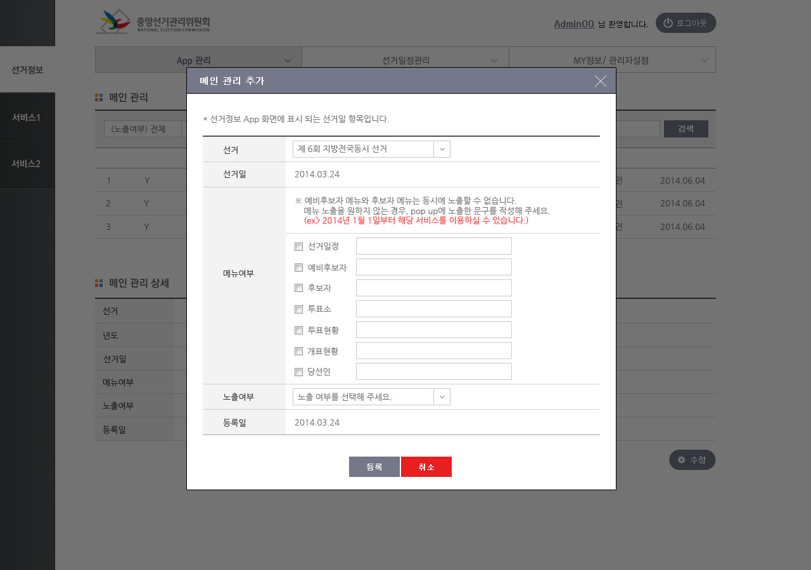

중앙선거관리위원회 선거정보 관지자 작업
| 작내용 | 선관위 내부 인트라넷 |
|---|---|
| 작업기간 | 2014.03 - 2014.03 |
| 고객사 | 중앙선거관리위원회 |
중앙선거관리위원회 선거관리 앱 작업을 진행하고 나서 그 연장선으로 선관위 관리자 작업까지 진행하게 되었습니다.
디자인 전반을 작업했고 퍼블리싱부터 개발까지는 원 수주사인 모빌씨앤씨에서 작업되었습니다.

- 